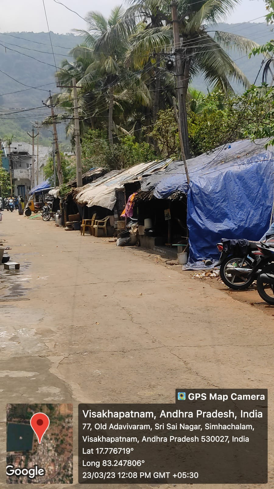

Simhachalam

Simhachalam is a slum area located in the city of Visakhapatnam under the jurisdiction of GVMC (Greater Visakhapatnam Municipal Corporation). The slum area is home to around 5,000 residents and faces several challenges that impact the well-being of its residents.The area has a high population density and lacks basic amenities like proper sanitation, clean drinking water, and electricity. The residents of Simhachalam slum mainly work as daily wage laborers in nearby industries or as vendors in the local market.
The government and non-governmental organizations are taking initiatives to improve the living conditions in the slum by providing basic amenities like toilets, water supply, and electricity. They are also working to provide skill training and job opportunities to the residents of the slum to improve their socio-economic status.
Major Problems
- Poor living conditions: Many households in the slum area are makeshift houses that lack basic amenities like toilets, running water, and electricity. This can lead to unhygienic conditions and increase the risk of health issues like diarrhoea and other water-borne diseases.
- Unemployment: Many residents in Old Adavivaram Simhachalam are daily wage workers who rely on casual labour for their livelihood. With the ongoing COVID-19 pandemic and the resulting economic slowdown, many have lost their jobs and are struggling to make ends meet.
- Poor sanitation: Lack of proper sanitation facilities and waste management infrastructure is a significant issue in the slum area. Open defecation is common, and garbage is often piled up on the streets, leading to unhygienic conditions and potential health hazards.
- Social exclusion: Residents in the slum area often face social exclusion and discrimination based on their caste, religion, and ethnicity, which can limit their access to resources and opportunities.
- Gender-based violence: Women and girls in the slum area are vulnerable to gender-based violence, including domestic violence and sexual assault. This is often due to a lack of awareness and inadequate law enforcement measures to protect women's rights.